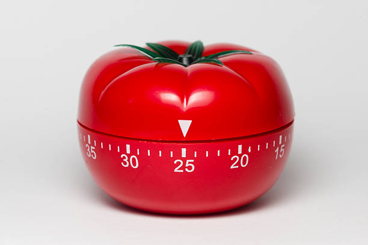

POMODORO TECHNIQUE
The Pomodoro Technique is a time management method based on 25-minute stretches of
focused work broken by five-minute breaks. Longer breaks,
typically 15 to 30 minutes, are taken after four consecutive work intervals.

HOW TO APPLY POMODORO
- Get a to-do list and a timer.
- Set your timer for 25 minutes, and focus on a single task until the timer rings.
- When your session ends, mark off one pomodoro and record what you completed.
- Then enjoy a five-minute break.
- After four pomodoros, take a longer, more restorative 15-30 minute break.